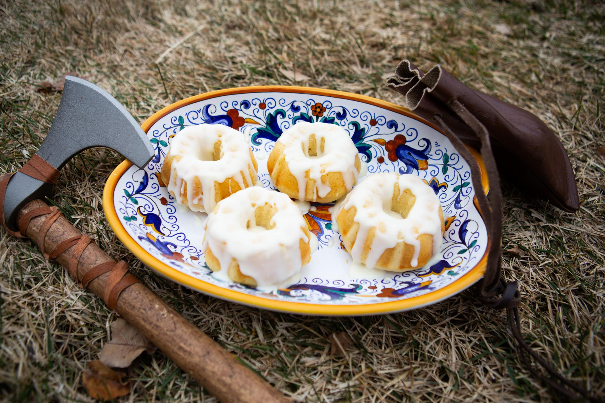

Sweet Roll Recipe

Ingredients list
For the Rolls:
- 2 cups all-purpose flour
- 1 tsp active dry yeast
- 1/2 cup warm milk
- 1/4 cup sugar
- 1/4 cup unsalted butter, melted
- 2 tbsp real honey
- 2 large eggs
- 1/2 tsp salt
For the Glaze:
- 1 cup powdered sugar
- 2 tbsp heavy cream or whole milk
- 1 tsp vanilla extract
- 2 tbsp unsalted butter, melted
Instructions
- Prep the Dough: In a small bowl, whisk the warm milk, yeast, and honey. Let it sit for 5-10 minutes until it froths.
- Mix: In a large mixing bowl, combine the flour, sugar, and salt. Pour in the yeast mixture, melted butter, and eggs. Beat until it forms a smooth, sticky dough.
- Rise: Cover the bowl with a damp cloth and let it rise in a warm place for about 1.5 hours, or until it doubles in size.
- Bake: Grease a mini bundt pan or special sweet roll pan. Spoon the dough into the molds (filling about halfway) and bake at 375°F (190°C) for 15–18 minutes until golden brown.
- Glaze: While the rolls cool, whisk together the powdered sugar, melted butter, milk, and vanilla until smooth. Drizzle generously over the inverted sweet rolls.